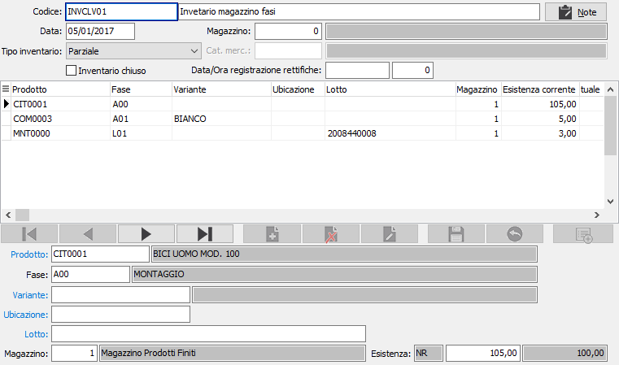
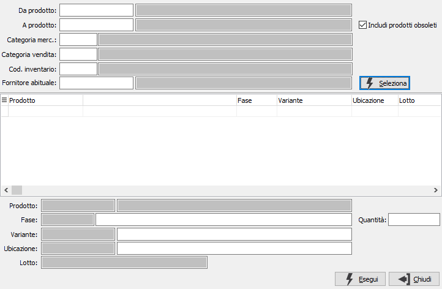
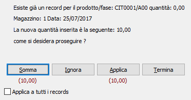
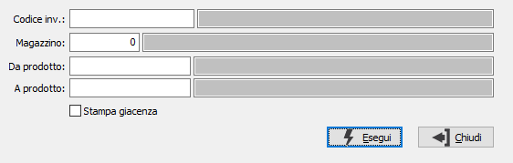

Utilizzando
il pulsante inserimento prodotti compare la seguente finestra:
Utilizzando
il pulsante inserimento prodotti compare la seguente finestra:Gestione inventario per fase
Il programma consente di inserire le esistenze effettive riscontrate per ogni prodotto/fase o associazione di prodotto/fase con elementi del dettaglio come variante, ubicazione o lotto (in base a come configurata la procedura).
Il programma permette di codificare l'inventario e le informazioni impostate vengono memorizzate e visualizzate ogni volta.
Per ogni inventario viene richiesta la data di registrazione, il magazzino e il tipo inventario che può essere impostato a:
Parziale: in fase di rilevazione rettifiche vengono movimentati solo gli articoli/fase presenti nell'inventario;
Completo per il magazzino: in fase di rilevazione rettifiche vengono trattati tutti gli articoli/fase, di conseguenza gli articoli/fase per cui non è stata inserita la giacenza sono considerati con giacenza a zero e quindi stornati;
Completo per il prodotto: in fase di rilevazione rettifiche vengono trattati tutti i dettagli degli articoli/fase presenti nell'inventario, questa gestione è utile per gli articoli gestiti a varianti, lotti, ubicazioni, gli articoli/fase che hanno almeno un rigo nell’inventario fisico vengono considerati inventariati e tutte le giacenze non presenti vengono portate a zero, mentre gli articoli/fase che non hanno nessun rigo in inventario fisico non vengono trattati.
Per ogni inventario è presente il check box "Inventario chiuso" che permette di chiudere l'inventario e poter effettuare la rilevazione delle rettifiche, una volta effettuata la rilevazione definitiva delle rettifiche vengono visualizzate la data e l'ora di registrazione delle rettifiche.

PRODOTTO: codice del prodotto per cui registrare l'esistenza. Sul campo sono attive le funzioni di ricerca (F9).
FASE: codice della fase, relativa al prodotto, per cui registrare l'esistenza. Sul campo sono attive le funzioni di ricerca (F9).
VARIANTE: eventuale codice della variante, se prevista, relativa al prodotto/fase inserito. Sul campo sono attive le funzioni di ricerca (F9).
UBICAZIONE: eventuale codice dell'ubicazione, se prevista, relativa al prodotto/fase inserito.
LOTTO: eventuale codice del lotto, se previsto, relativo al prodotto/fase inserito. Sul campo sono attive le funzioni di ricerca (F9).
MAGAZZINO: codice del magazzino relativo al prodotto/fase; viene proposto quello inserito per la selezione. Sul campo sono attive le funzioni di ricerca (F9).
ESISTENZA: esistenza effettiva relativa ai dati sopra inseriti. Di fianco al campo viene mostrata l'esistenza attuale.
ESISTENZA SECONDARIA: se attivato in configurazione del modulo di Magazzino l'utilizzo della quantità secondaria in inventario fisico viene richiesta anche la quantità in unità di misura secondaria dell'articolo.
Utilizzando
il pulsante inserimento prodotti compare la seguente finestra:

Da questa finestra è possibile utilizzando i criteri di selezione visualizzare, tramite il pulsante Selezione, un elenco di prodotti/fase che è possibile inserire. Per ogni prodotto visualizzato è possibile impostare una quantità o lasciare zero, i prodotti saranno comunque inseriti.
La pressione sul pulsante Salva posto sulla toolbar determina l'effettivo salvataggio dei dati inseriti.
Se al momento dell'inserimento dei prodotti/fase o del salvataggio vengono rilevate duplicazioni di dati inseriti compare una finestra di avviso che propone le soluzioni attuabili: sommare il dato in inserimento a quello presente (Somma), non utilizzare il dato corrente (Ignora), utilizzare il dato corrente (Applica) oppure interrompere l'operazione (Termina).

È possibile attivare la stampa, prima di selezionare i dati, utilizzando il bottone Stampa o Anteprima della tool bar; compare la finestra di richiesta parametri dove è possibile specificare il codice inventario, il magazzino, il prodotto di inizio e fine analisi.

|
Se attiva la gestione matricole sarà possibile accedere dal singolo rigo/dettaglio alla finestra delle matricole tramite il pulsante sul rigo o tramite il pulsante Matricole in alto con cui si accede alla finestra di gestione massiva. Al momento della registrazione delle rettifiche se è stata rettificata la giacenza di un prodotto gestito a matricole, fornendo le effettive matricole giacenti, quelle eventualmente presenti e non corrispondenti saranno stornate. |